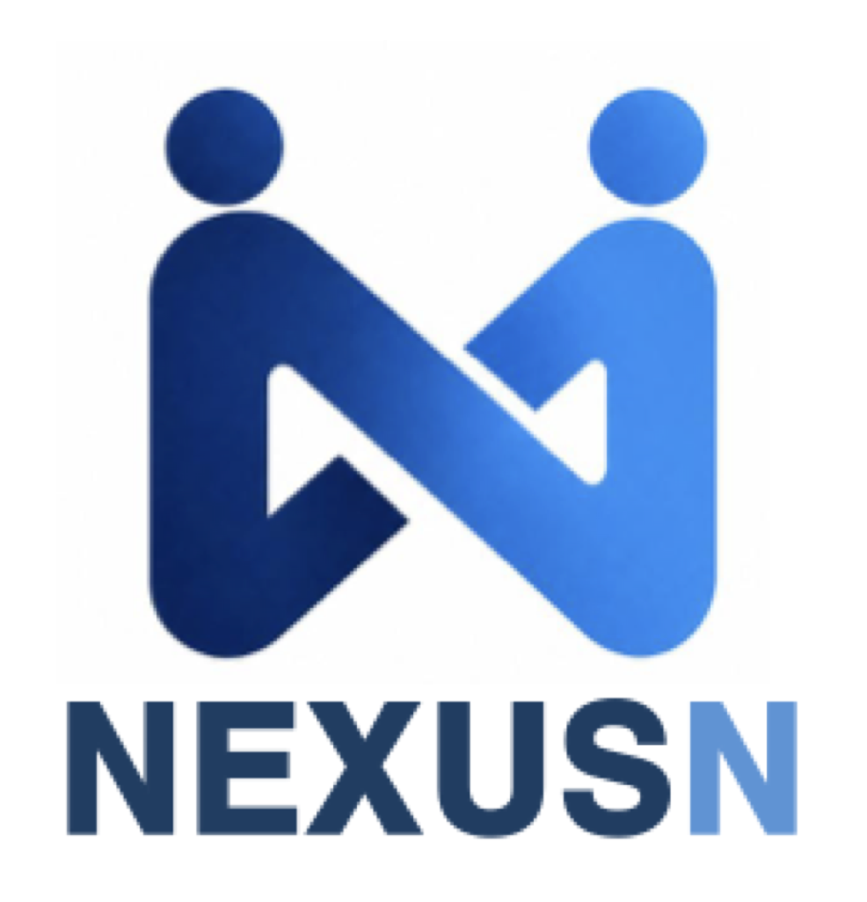

Nexus_N은 단순한 인력 공급을 넘어, 사람과 기업이 함께 성장하는 지속 가능한 고용 생태계를 만들어갑니다.
우리는 모든 연결의 중심에서, 신뢰를 기반으로 새로운 일의 가치를 창조하는 기업이 되는 것을 비전으로 합니다.
모든 관계를 하나의 네트워크로 엮어 더 큰 시너지를 창출합니다.
더 나은 방법을 찾아 끊임없이 발전하며 미래를 향해 나아갑니다.
일하는 방식을 개선하고, 새로운 서비스를 끊임없이 창조합니다.
사람이 모여, 새로운 가치를 만드는 곳 — Nexus_N
정직과 원칙으로 관계를 쌓고, 투명한 운영과 법적 준수로 고객과 근로자의 신뢰를 지킵니다.
깊이 있는 지식과 실행력으로 결과를 만들어냅니다.
함께 성장하고 함께 이익을 나누는 구조를 지향합니다.
더 나은 방법을 찾아 끊임없이 발전하고 새로운 서비스를 창조합니다.
모든 관계를 하나의 네트워크로 엮어 더 큰 시너지를 만듭니다. Nexus는 결합의 중심, 우리는 그 중심에 있습니다.
10년 이상의 현장 경험과 체계적인 인력 관리 시스템을 바탕으로,
고객사의 인사·노무 부담을 최소화하고 최적의 인력 솔루션을 제공합니다.
생산 / 물류 / 판매 등 다양한 산업 분야에서 10년 이상 경력을 가진 전문가가 파트너사에 맞는 컨설팅을 제공합니다.
축적된 운영 노하우와 시스템화된 프로세스로 안정적이고 효율적인 인력 운영을 보장합니다.
경기 변동, 계절적 수요, 일시적 업무량 변화에 즉각 대응하는 유연한 인력 운영이 가능합니다.
관련 법령을 철저히 준수하며 투명한 운영으로 고객사와 근로자 모두의 신뢰를 지킵니다.
근로자 파견 · 도급(업무위탁) · 채용대행 — 기업의 인력 운영 효율성과 안정적인 사업 수행을 지원합니다.
파견사업주가 근로자를 고용한 후 그 고용관계를 유지하면서 근로자 파견계약의 내용에 따라 사용사업주의 지휘 명령을 받아 사용사업주를 위한 근로에 종사하게 하는 새로운 고용형태를 말합니다.
노동부가 정한 32개의 파견대상 업무에 한해 근로자파견 가능
출산·질병·부상 등으로 결원 발생 시 해당 기간 동안 근로자파견 사용 가능
파견이 원칙적으로 제한된 직종(예: 생산직)이라도 일시·간헐적인 인력 수요가 있는 경우 3개월 이내에 파견사용 가능
— 고용계약관계 —
| 코드 | 업무명 | 코드 | 업무명 |
|---|---|---|---|
| 120 | 컴퓨터관련 전문가 | 317 | 사무 지원 종사자 |
| 16 | 행정, 경영 및 재정/금융전문가 | 318 | 도서, 우편 및 관련 사무 종사자 |
| 17131 | 특허전문가 | 3213 | 수금 및 관련 사무 종사자 |
| 181 | 기록보관원, 사서 및 관련 전문가 | 3222 | 전화교환 및 번호안내 사무 종사자 |
| 1822 | 번역가 및 통역가 | 323 | 고객상담, 고객관련 사무 종사자 |
| 183 | 창작 및 공연 예술가 | 411 | 간병인, 약사보조, 개인보호종사자 |
| 184 | 영화, 연극 및 방송관련전문가 | 421 | 음식조리종사자(주방장 및 조리사) |
| 220 | 컴퓨터관련 준전문가 | 432 | 여행안내 종사자(국내 외 관광통역) |
| 23219 | 기타 전기공학 기술공 | 51206 | 주유원 |
| 23221 | 통신 기술공 | 51209 | 기타 소매업체판매원 |
| 234 | 제도기술종사자(CAD포함) | 521 | 전화통신 판매 종사자의 업무 |
| 235 | 광학 및 전자장비 기술종사자 | 842 | 자동차 운전 종사자 |
| 252 | 정규교육 외 교육전문가(강사) | 9112 | 건물 청소 종사자 |
| 253 | 기타교육 준전문가 | 91221 | 수위 및 경비원 |
| 28 | 예술, 연예 및 경기 준전문가 | 91225 | 주차장 관리원 |
| 291 | 관리 준전문가(관리비서 등) | 913 | 배달, 운반 및 검침관련 종사자 |
「파견근로자 보호 등에 관한 법률 시행령」 제2조에 따라, 파견이 허용된 32개 업종 내에서 근로자파견이 가능합니다.
안정적인 노무 관리 체계를 통해 고객사에 최적화된 인력 솔루션을 제안합니다.
기업의 비핵심 업무를 외부 아웃소싱 전문기관에 위탁하여 특정한 업무를 수행하는 방식으로서, 단순하고 반복적인 업무가 아웃소싱 되면서 조직이 슬림해지고 인력의 관리비용이 최소화되어 절감된 비용을 핵심 분야에 투자함으로써 기업의 경쟁력을 강화시킵니다.
— 도급업무의 지지/감독 —
다양한 산업 분야(생산/물류/판매 등)에서 10년 이상의 경력을 가진 전문가가 파트너사에 맞는 컨설팅을 제공합니다.
전문적인 채용 프로세스를 적용하여 현장 직무에 적합한 인재를 선발합니다. 채용의 계획 단계에서 최종 선발까지의 전 프로세스를 수립하고 진행합니다.
— 면접진행 및 최종합격자 입사 —
체계적인 채용 솔루션을 통해 고객사에 최적화된 인력을 제안합니다.
인력 운영의 모든 고민, 넥서스엔이 함께 해결합니다.
지금 바로 전문가와 상담하세요.